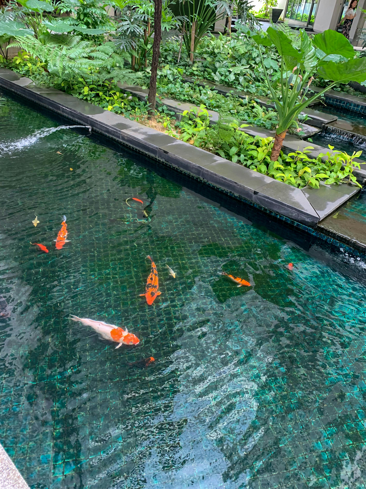
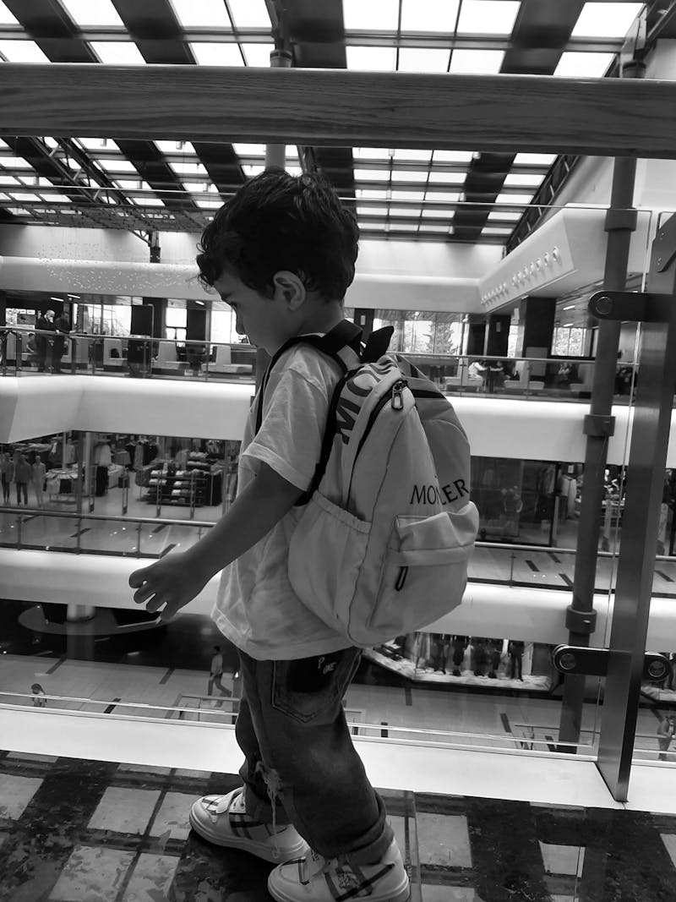
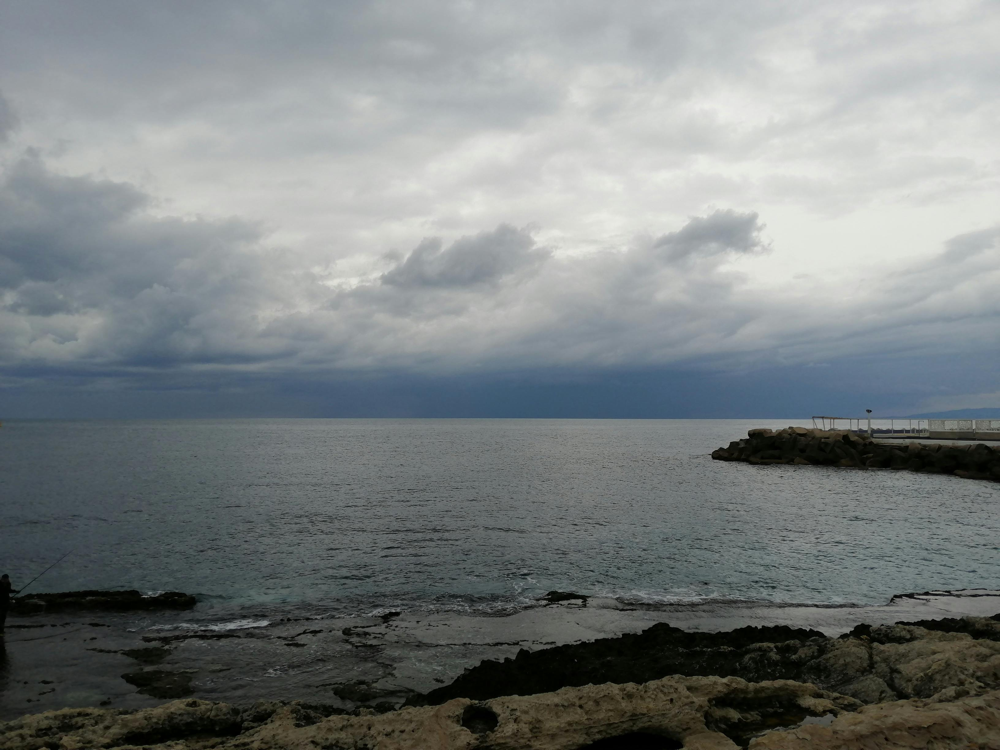
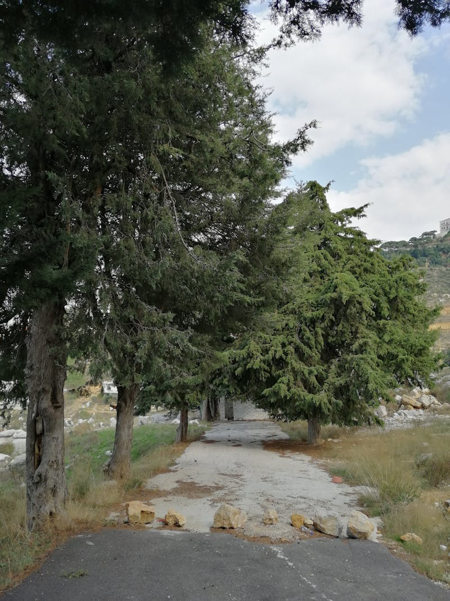

7N/8D Family Escape

Upon arrival at New Jalpaiguri (NJP) at 2:00 PM via the Vande Bharat Express, transfer to Phuentsholing. After checking into your hotel, enjoy a relaxed evening exploring the local market and the Crocodile Breeding Centre.

After breakfast and immigration formalities, begin the scenic 6-hour drive to Thimphu. The route winds through lush Himalayan foothills, offering stops at the Gedu viewpoint and local waterfalls. Witness the iconic "human traffic policeman" at the main intersection.
Explore the National Textile Museum, Jungshi Handmade Paper Factory, Motithang Takin Preserve to see Bhutan's national animal, and Sangaygang Viewpoint for a spectacular sunset panorama of the valley.

Depart for Paro with a stop at the high-altitude Dochula Pass for sweeping views of snow-capped Himalayan peaks. Visit Ta Dzong (National Museum), a historic watchtower featuring exhibits on natural history and Bhutanese heritage.
Take a scenic drive to Chele La Pass, the highest motorable road in Bhutan, offering spectacular views of Mt. Jomolhari. Visit a traditional farmhouse to experience authentic rural life and enjoy a local archery demonstration.

Embark on the famous hike to Tiger's Nest (Taktsang) monastery. The trail through pine forests offers incredible photographic opportunities of this cliffside sacred site. After descending, unwind with a traditional Bhutanese Hot Stone Bath.
After a final morning stroll through Paro's charming town center for souvenirs, begin the return drive to Phuentsholing. Stop at riverside spots for photos and reflect on the journey. Farewell dinner at the border.
After breakfast, transfer from Phuentsholing back to New Jalpaiguri (NJP) station for your onward journey home. Carry with you memories of the majestic Himalayas, ancient monasteries, and the warm hospitality of the Land of the Thunder Dragon.
All-Inclusive Package